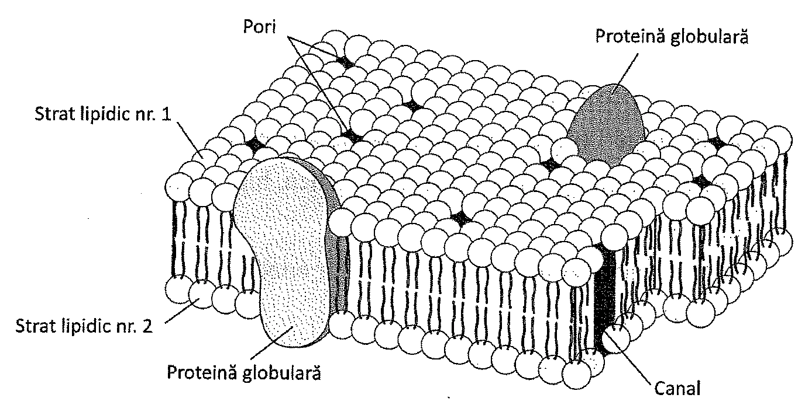
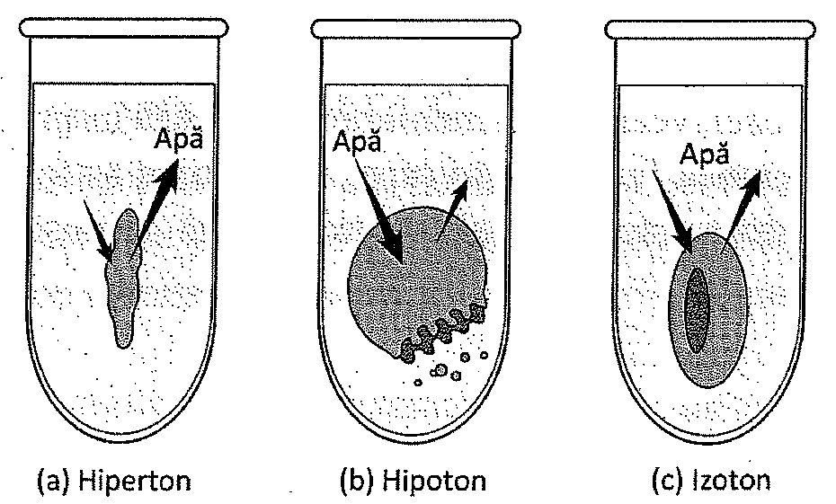
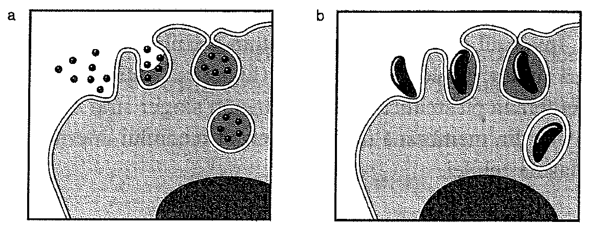
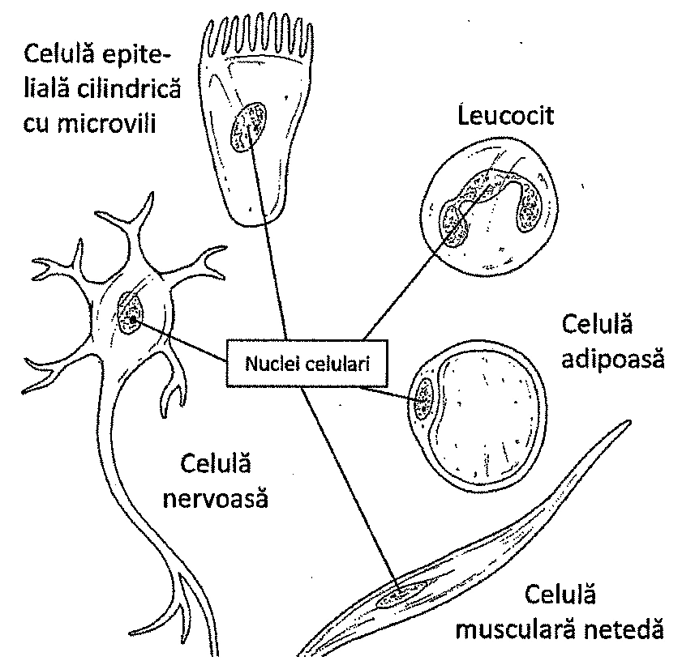
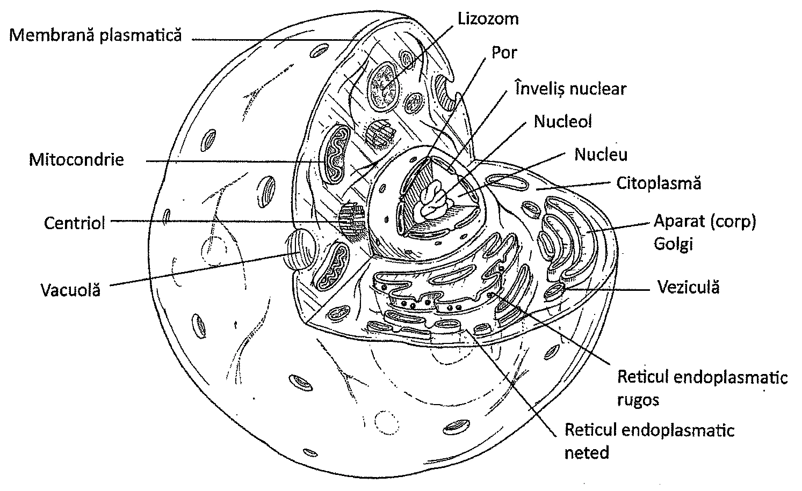

Capitolul 3 - Celula și fiziologia celulară
3.1. Introducere
Similar tuturor organismelor vii, corpul uman este alcătuit din celule. Acest concept, cunoscut drept teoria celulară, este un principiu de bază al biologiei. Se poate spune, astfel, că biologia corpului uman gravitează în jurul biologiei celulare (Figura 3.4).
Celulele reprezintă un criteriu important de clasificare a organismelor vii în două grupuri majore: procariote și eucariote. Celulele procariote sunt lipsite de nucleu, spre deosebire de cele eucariote, care au nucleu. În plus, celulele procariote nu au componente celulare interne numite organite, spre deosebire de celulele eucariote care au organite. Celulele procariote nu se divid prin procesul de mitoză, însă celulele eucariote da. Procariotele includ bacteriile, iar dintre eucariote fac parte plantele, animalele și oamenii.
3.2. Structura celulei
Toate celulele, inclusiv cele umane, au două componente de bază: citoplasma și membrana plasmatică (numită și membrană celulară). Citoplasma este o substanță cu consistența unui gel, fundamentală pentru celulă. Ea conține cel mai mare component celular, nucleul. Membrana plasmatică este membrana exterioară, ce separă celula de mediul extern.

Membrana plasmatică
Membrana plasmatică (cunoscută și sub denumirea de membrană celulară) delimitează celulele. Este alcătuită în principal din proteine și lipide, mai ales fosfolipide. Lipidele sunt așezate în două straturi (structură bistratificată). Proteinele globulare încorporate în această structură par să plutească printre lipide. Putem spune astfel despre membrană că are o structură de mozaic fluid (Figura 3.1). Proteinele din structura membranei îndeplinesc numeroase funcții.
Alcătuire
Fosfolipidele din membrana plasmatică au un capăt polarizat ce conține fosfor și unul nepolarizat alcătuit din lanțuri de acizi grași. Capătul polarizat este atras de apă și deci, este hidrofil („îi place apa”), în timp ce capătul nepolarizat interacționează cu alte substanțe, de asemenea nepolarizate, respingând moleculele de apă. Acest al doilea capăt este, astfel, hidrofob („se teme de apă”).
Datorită acestor proprietăți ale fosfolipidelor, membrana plasmatică are o structură de „sandwich", în care capetele polarizate intră în contact cu apa din exteriorul și interiorul celulei, iar capetele nepolarizate se află față în față în porțiunea internă a membranei. Această proprietate a fosfolipidelor îi permite membranei plasmatice să-și mărească suprafața atunci când veziculele aparatului Golgi fuzionează cu ea. Unele dintre moleculele stratului lipidic situat spre exterior au atașate molecule de glucide; acestea se numesc glicolipide. Membrana plasmatică mai conține și cantități mari dintr-un lipid numit colesterol. Colesterolul stabilizează lipidele din membrană, reducându-i acesteia fluiditatea.
Proteinele din membrana plasmatică sunt atât transmembranare, cât și periferice. Proteinele transmembranare ocupă întreaga grosime a membranei, proemină pe ambele fețe ale acesteia și servesc drept canale pentru transportul membranar. Ele pot servi, de asemenea, și ca transportori ai moleculelor organice. Moleculele de glucide se asociază de obicei cu proteinele situate înspre mediul extern al celulei; acestea se numesc glicoproteine. Glicolipidele și glicoproteinele din exteriorul celulelor le permit acestora să se recunoască una pe cealaltă, servind ca și receptori pentru moleculele semnalizatoare, precum hormonii. Proteinele periferice se atașează pe suprafața membranei. Multe dintre acestea acționează ca și enzime, iar altele au rol în remodelarea celulară în timpul diviziunii și contracțiilor celulare.
3.3. Mișcările moleculare
Membrana plasmatică este semipermeabilă, deoarece moleculele mici (O₂, CO₂ și apa) și lipidele pot aluneca printre moleculele fosfolipidice, în timp ce moleculele mari nu pot trece cu ușurință înspre sau dinspre celulă. Pentru ca citoplasma să comunice cu mediul extern, substanțele trebuie să treacă prin membrana plasmatică. Sunt câteva modalități prin care aceste treceri se pot realiza.
Una din aceste modalități se numește difuziune (Tabelul 3.1). Difuziunea reprezintă mișcarea moleculelor dintr-o zonă cu o concentrație mare într-una cu concentrație mică, diferență numită gradient de concentrație. Această mișcare apare deoarece moleculele se află într-o continuă coliziune una cu cealaltă și tind să se deplaseze din zonele unde sunt foarte concentrate, înspre cele în care concentrația lor e mai scăzută (conform gradientului de concentrație). În plămân, moleculele de oxigen trec prin difuziune din alveolele pulmonare în globulele roșii.
Un tip de difuziune este osmoza. Osmoza reprezintă difuziunea moleculelor de apă printr-o membrană semipermeabilă dintr-o regiune cu o concentrație mică a substanței dizolvate (solvit) într-una cu o concentrație mare. Membrana semipermeabilă permite doar trecerea anumitor molecule (cum ar fi moleculele de apă). Un solvit este o substanță chimică dizolvată în lichid (solventul). Un exemplu de solvit este clorura de sodiu.
| Mecanismul | Caracteristici | Exemplu |
|---|---|---|
| Difuziune | Trecerea moleculelor din zone cu concentrație mare în zone cu concentrație mică | Difuziunea oxigenului din plămâni în capilare |
| Osmoză | Difuziunea apei | Reabsorbția apei la nivelul tubilor renali |
| Difuziune facilitată | Difuziune cu ajutorul unei proteine transportoare | Difuziunea glucozei în hematii |
| Transport activ | Trecerea moleculelor din zone cu concentrație mică în zone cu concentrație mare cu ajutorul unei proteine transportoare și a energiei furnizate de ATP | Reabsorbția sărurilor la nivelul tubilor renali |
| Endocitoză | Membrana înglobează substanțe și le atrage în celulă prin vezicule delimitate de membrană | Ingestia bacteriilor de către leucocite |
| Exocitoză | O veziculă citoplasmatică delimitată de membrană fuzionează cu membrana celulară și își eliberează conținutul în afara celulei | Eliberarea neurotransmițătorilor de către celulele nervoase |
Pentru a înțelege osmoza, imaginați-vă ce se întâmplă când celulele umane sunt introduse într-o soluție cu concentrație de 5% sare. Concentrația normală a sării în citoplasmă este de aproximativ 1%, deci concentrația mai mare a solvitului (sare) se află în afara celulei. Așadar, apa se deplasează din citoplasmă, prin membrana celulară, în direcția concentrației mai mari de sare. Rezultatul este micșorarea („zbârcirea”) celulei. (Figura 3.2a). Deoarece soluția are concentrația de solvit (sare) mai mare, ea se numește soluție hipertonă.
Imaginați-vă ce se întâmplă când celulele umane sunt introduse într-o soluție cu o concentrație de doar 0,3% sare. Concentrația sării în citoplasmă este tot de aproximativ 1%, astfel încât concentrația mai mare a solvitului (sare) se află în interiorul celulei. Așadar, apa se deplasează înspre citoplasmă prin membrana celulară, în direcția concentrației mai mari de sare. Osmoza face ca celulele să se umfle sau să se lizeze (să explodeze) (Figura 3.2b). Întrucât soluția de la exterior are concentrația mai scăzută de sare, ea se numește soluție hipotonă.
Dacă concentrațiile de sare ar fi la fel în interiorul și în exteriorul celulei (aproximativ 1%), soluția ar fi izotonă. Osmoza nu se produce când celulele sunt plasate în soluție izotonă, deoarece concentrația solvitului este aceeași de ambele părți ale membranei (Figura 3.2c).
Celulele plasate în soluții hipertone se zbârcesc; celulele plasate în soluții hipotone se umflă și se lizează.
O altă modalitate de mișcare moleculară prin membrana celulară este difuziunea facilitată. Acest tip de difuziune este asistat de proteinele prezente în membrană. Acestea lasă să treacă doar anumite molecule prin membrană și permit mișcarea dintr-o zonă cu concentrație mare de molecule într-una cu concentrație mică. Numărul proteinelor transportoare determină rata cu care are loc difuziunea facilitată.


O modalitate suplimentară de transport a substanțelor prin membrană este transportul activ. În cadrul acestui mecanism, proteinele transportă compușii chimici prin membrană, dintr-o regiune cu concentrație mică într-una cu concentrație mare. Această mișcare se realizează „împotriva gradientului de concentrație" și necesită energie furnizată de adenozin trifosfat (ATP). De exemplu, transportul activ are loc în celulele nervoase unde ionii de sodiu sunt transportați în afara celulei, regiune care deja conține o concentrație mare de ioni de sodiu. Similar difuziunii facilitate, rata transportului activ este limitată de numărul proteinelor transportoare.
O ultimă modalitate de transport prin membrana plasmatică este endocitoza. În timpul endocitozei, o mică porțiune din membrana plasmatică se pliază și înglobează particule sau mici volume de lichid de la suprafața celulară. Membrana se închide, delimitând o veziculă ce se va desprinde și va migra în citoplasmă. Când endocitoza implică material solid, procesul se numește fagocitoză (Figura 3.3b), iar când implică picături de lichid, se numește pinocitoză (Figura 3.3a). Globulele albe, de exemplu, realizează endocitoză atunci când îndepărtează microbii din circulația sanguină.
Opusă endocitozei este exocitoza. În timpul exocitozei, substanțele se deplasează din interiorul unei celule spre mediul extern celular. Procesul este utilizat pentru secreția hormonilor de către celulele endocrine, pentru eliberarea neurotransmițătorilor la nivelul terminațiilor celulelor nervoase și pentru secreția de mucus de către celule în diferite organe. În timpul exocitozei, vezicule cu membrană migrează înspre membrana celulară, cu care fuzionează. Regiunea fuzionată se rupe, împrăștiind astfel conținutul veziculei în mediul extern. Exocitoza este o modalitate importantă de mișcare a moleculelor în celulele secretoare.
Nucleul
Cu excepția globulelor roșii, toate celulele umane au nucleu. Nucleul este compus în principal din histone (un tip de proteine) și acid dezoxiribonucleic, sau ADN. ADN-ul este organizat în unități liniare numite cromozomi. Segmentele funcționale ale cromozomilor sunt numite gene. Există circa 30.000 de gene în nucleii celulelor umane. Histonele oferă un cadru de sprijin pentru ADN. Ele se unesc cu ADN-ul pentru a forma structuri cu dimensiuni electronomicroscopice numite nucleozomi. Nucleozomii se înfășoară între ei și formează cromozomul.
Nucleul celulelor umane este înconjurat de o membrană numită înveliș nuclear. Învelișul nuclear este o structură membranară dublă, alcătuită din două straturi duble de fosfolipide (lipide ce conțin fosfor), dublu față de membrana plasmatică, care conține un singur strat dublu de fosfolipide. Porii din membrana nucleară permit mediului intern al nucleului să comunice cu citoplasma celulei.
Nucleul conține cromozomi alcătuiți din ADN și histone.

În nucleu sunt două sau mai multe mase dense numite nucleoli. Nucleolii conțin acid ribonucleic sau ARN. Acest acid nucleic intervine în producerea subunităților unor particule submicroscopice numite ribozomi. Subunitățile produse sunt mai apoi asamblate în citoplasmă, rezultând ribozomii.
Citoplasma și organitele
Citoplasma este o substanță semilichidă, fundamentală pentru celulă. În citoplasmă au loc unele procese metabolice și sinteze proteice. Ea conține mai multe componente microscopice specializate numite organite („mici organe"), în care se desfășoară diverse funcții celulare.
Reticulul endoplasmatic este un organit alcătuit dintr-un ansamblu de membrane ce se extind intracitoplasmatic (Figura 3.5). În unele locuri, reticulul endoplasmatic prezintă atașate structuri submicroscopice numite ribozomi. Când sunt prezenți ribozomii, reticulul endoplasmatic se numește reticulul endoplasmatic rugos. Când ribozomii lipsesc de pe suprafața reticulului endoplasmatic, el se numește neted. Reticulul endoplasmatic rugos este sediul sintezei proteinelor, iar ribozomii sunt corpusculii în care aminoacizii sunt combinați chimic pentru a forma proteine. În reticulul endoplasmatic neted are loc sinteza lipidelor și a membranei, precum și depozitarea calciului.
Un alt organit este corpul Golgi (aparatul Golgi), alcătuit din mai mulți saci turtiți, de obicei curbați la capete. Sacii se unesc între ei parțial și formează vezicule asemănătoare unor picături. În aparatul Golgi, proteinele și lipidele celulare sunt procesate și împachetate în vezicule înainte de a fi transportate spre destinația lor finală.

Un alt organit este lizozomul, derivat din sacii aparatului Golgi. Lizozomul este o veziculă cu enzime folosite în procesele de digestie ale celulei. Enzimele sale degradează particulele nutritive pătrunse în celulă și pun la dispoziția celulei produșii finali.
Organitul în care este eliberată cea mai mare parte a energiei provenind din alimente este mitocondria. Aici se degradează molecule de glucide, lipide, proteine, iar energia este folosită pentru a forma molecule de ATP (adenozin trifosfat), care servesc nevoilor energetice ale celulei. Aceasta este o etapă importantă în respirația celulară (capitolul 19). Deoarece sunt implicate în procesele energetice, mitocondriile mai sunt numite „generatoarele celulei". În interiorul mitocondriei, respirația celulară este completă când oxigenul se combină cu hidrogen și electroni ca să formeze apă. Mitocondriile folosesc oxigenul provenit din aerul inspirat. Acesta este exact motivul pentru care trebuie să respirăm oxigen: fără oxigen, mitocondria produce insuficient ATP. Fără ATP în cantitate adecvată, celulele mor. Când prea multe celule mor din cauza lipsei oxigenului și a ATP-ului, organismul nu supraviețuiește.
O altă structură celulară este citoscheletul, o rețea interconectată de fibre, filamente și molecule îmbinate, care servește drept structură de suport a celulei. Componentele principale ale citoscheletului sunt: microtubulii, microfilamentele și filamentele intermediare. Toate componentele citoscheletului sunt alcătuite din subunități proteice.
Unele celule umane au o extensie numită flagel, iar alte celule au cili. Flagelul este lung, asemănător unui fir de păr, asigurând mișcarea unor celule, precum spermatozoizii. Cilii sunt mai scurți și mult mai numeroși decât flagelii. În celulele umane care căptușesc căile aeriene superioare și tractul respirator, cilii se ondulează în mod sincron, deplasând stratul de mucus cu particulele străine prinse în el.
Celulele și energia
Această secțiune nu este inclusă în programa de admitere UMF Cluj 2025.
Înapoi la citoplasma și organitele celulareRecapitulare
Conținutul lecției urmează paginile incluse în programa de admitere UMF Cluj 2025.
Înapoi la lecție